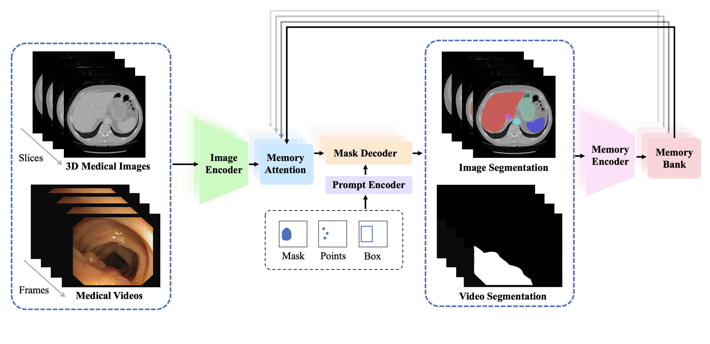

Yichi Zhang
 |
Github | Google Scholar | Semantic Scholar | ResearchGate |
Selected Publications
Foundation Models for Medical Imaging
|
|
|
 |
|
|
|  |
|
Data/Label-Efficient Learning for Medical Image Analysis
 |
|
|
 |
|
 |
|
|
Dataset/Benchmark for Biomedical Imaging and Healthcare Applications
|
|
 |
|
|
 |
|
Model-Centric Advancements for Medical Image Analysis
|
|
 |
|
|
Academic Services
Program CommitteesAAAI Conference on Artificial Intelligence (AAAI'25)
International Joint Conference on Artificial Intelligence (IJCAI'25)
International Conference on Learning Representations (ICLR'25)
IEEE/CVF Conference on Computer Vision and Pattern Recognition (CVPR'24-25)
IEEE/CVF International Conference on Computer Vision (ICCV'25)
IEEE/CVF Winter Conference on Applications of Computer Vision (WACV'25)
International Conference on Medical Image Computing and Computer-Assisted Intervention (MICCAI'24-25)
International Conference on Medical Imaging with Deep Learning (MIDL'22-24)
International Conference on Artificial Neural Networks (ICANN'24)
IEEE International Symposium on Biomedical Imaging (ISBI'24)
Nature Methods
IEEE Transactions on Medical Imaging
IEEE Journal of Biomedical and Health Informatics
Medical Image Analysis
Artificial Intelligence in Medicine
Artificial Intelligence Review
Neural Networks
Engineering Applications of Artificial Intelligence
Medical Physics
Cancer Medicine
International Journal of Computer Assisted Radiology and Surgery
Journal of Imaging Informatics in Medicine
Systems Science & Control Engineering
Mathematical Biosciences and Engineering
International Journal of Image and Graphics
Honors & Awards
[2024] IEEE Transactions on Medical Imaging (TMI) Distinguished Reviewer
[2023] Doctoral Student Forum Award on Data Science and Brain-Inspired Intelligence, Fudan University
[2023] Excellent Graduate Award of Beijing
[2023] Excellent Master Thesis of Beihang University
[2022] Finalist of Excellent Graduate Student of Beihang University
[2022] Outstanding Graduate Student Award 2022
[2021] National Scholarship in China (Top 1.6%)
[2020] Graduate President Scholarship for Science and Technology Competition (10 every year in Beihang University)
[2020] Scholarship of Outstanding Graduate Students
[2020] Champion, Myocardial Infarction Segmentation (EMIDEC Challenge in MICCAI 2020)
[2019] First Prize of National Biomedical Engineering Innovation and Design Contest of China (Top 5%)
[2018] Special Prize of Feng Ru Cup Competition of Innovation, Beihang University (Top 0.3%)